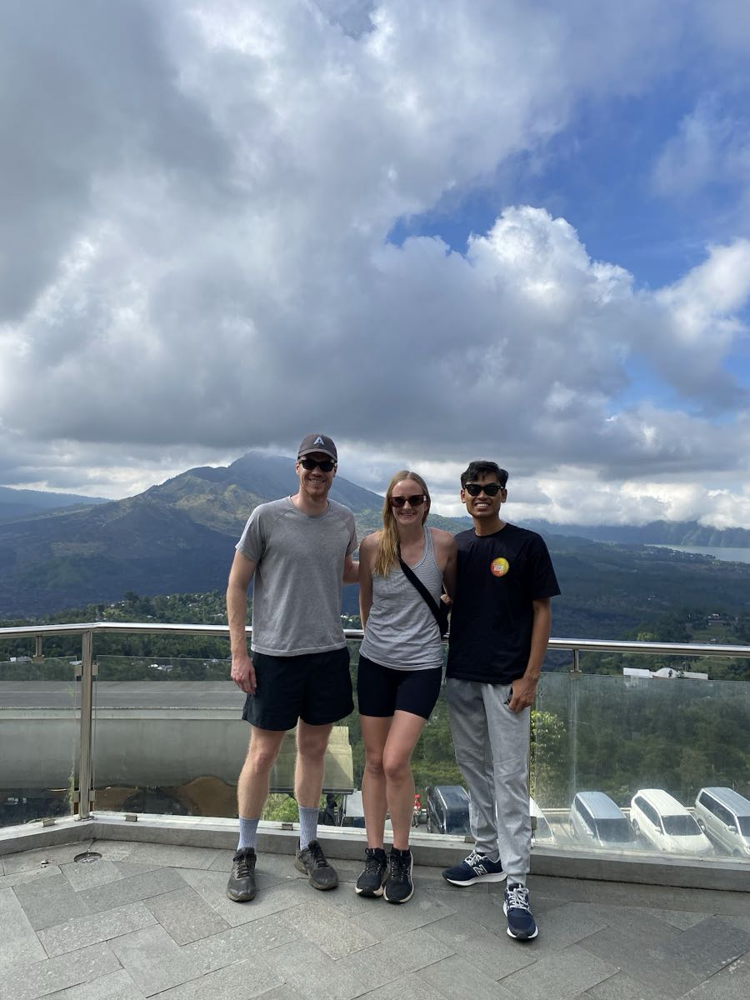
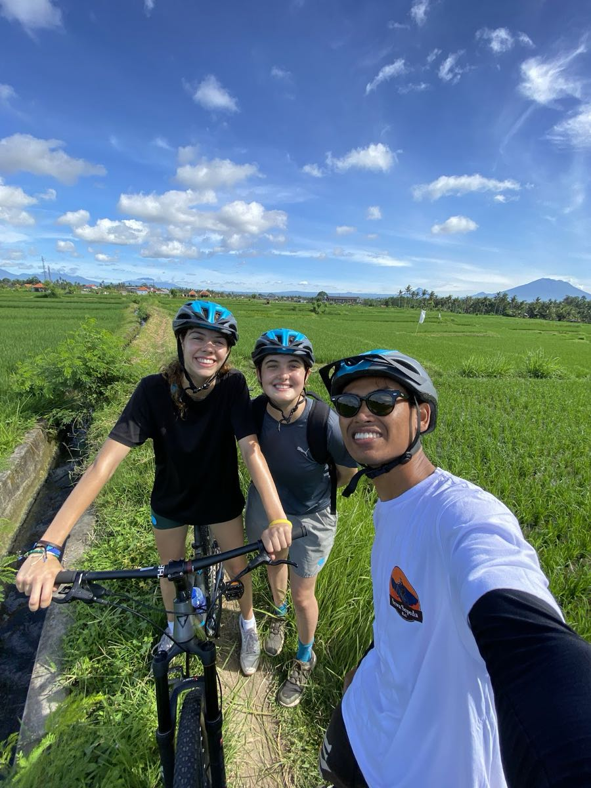
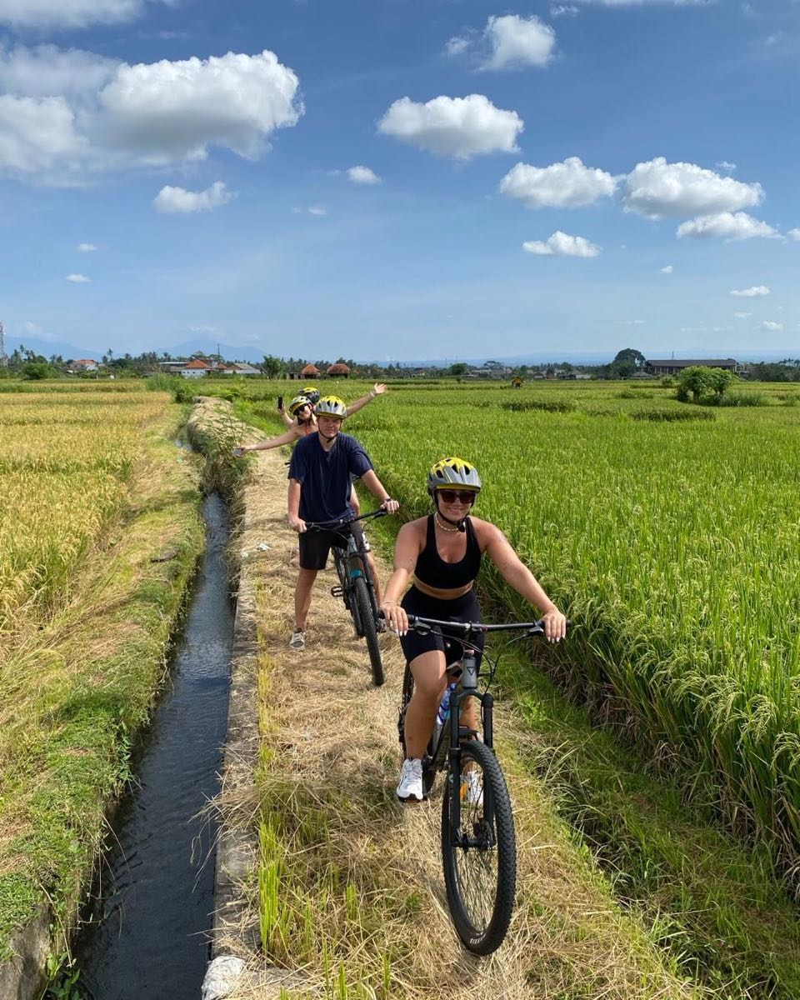
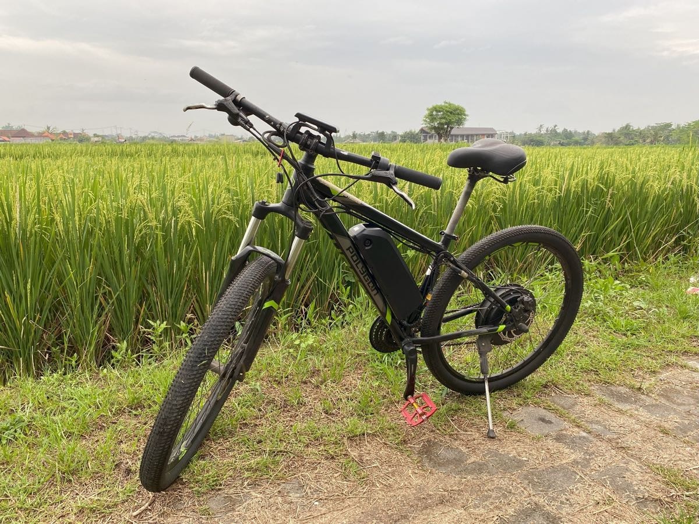
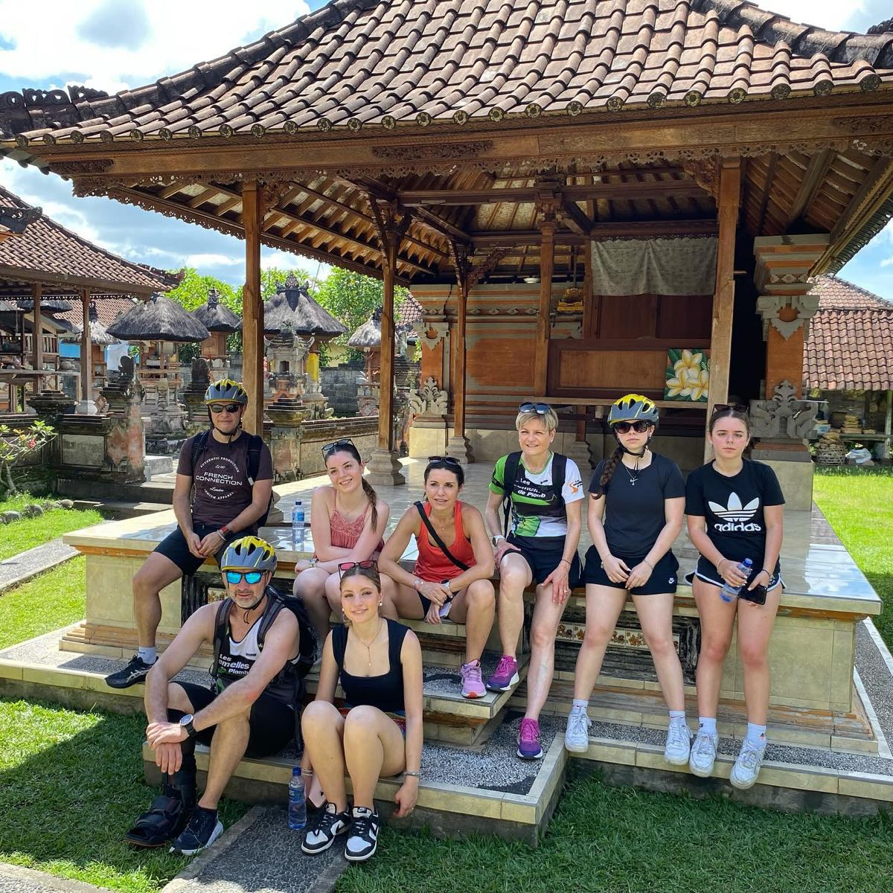
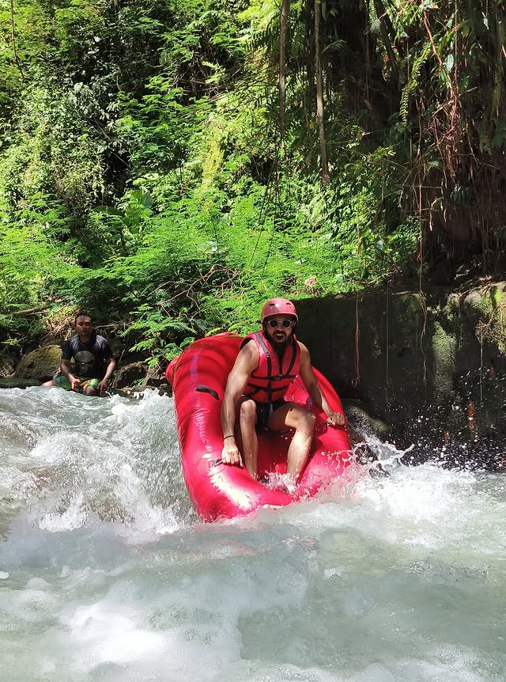
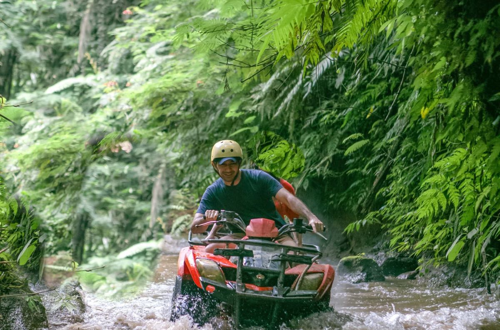

“Kami menghadirkan tur sepeda privat eksklusif di Ubud Bali, tanpa digabung rombongan lain, untuk pengalaman gowes yang lebih nyaman, akrab, dan berkesan.”
Dewa Bike menghadirkan cara terbaik menikmati wisata sepeda di Ubud Bali melalui berbagai pilihan paket privat agar waktu liburan Anda benar-benar berkesan.


Dewa Bike adalah pilihan terbaik untuk merasakan keseruan tur sepeda di Ubud secara autentik. Kami menawarkan beragam paket tur sepeda privat Bali yang siap membuat liburan Anda semakin seru dan berkesan.
Jalannya didominasi turunan santai sehingga tidak perlu sering mengayuh, lebih banyak mengontrol rem dengan nyaman. Perjalanan menuju titik mulai berkisar 45 menit – 1 jam dari Ubud. Sebelum start, kita akan singgah di spot pemandangan Gunung & Danau Batur, lalu bersepeda sejauh sekitar 18 km.
Perpaduan rute menanjak landai, menurun, jalan datar, gang desa, dan sawah. Sekitar 30 menit dari pusat Ubud ke titik mulai. Tanjakan dan turunannya tidak curam dengan total jarak 12 km—pas untuk olahraga santai. Untuk E-Bike minimal tinggi badan 150 cm.
Durasi bersepeda berkisar antara 2 hingga 2,5 jam, sudah termasuk singgah ke beberapa lokasi menarik seperti SD desa setempat, rumah adat Bali, berhenti di depan pura desa, serta bersepeda melewati area persawahan.
Kami juga bisa menggabungkan kedua rute tersebut sekaligus (total jarak hingga 40 km).Kami menyiapkan dua kategori paket fleksibel yang bisa disesuaikan dengan gaya liburan, jadwal, dan anggaran Anda di Bali.
Susunan jadwal harian yang santai dan terukur demi kenyamanan penuh Anda sekeluarga. Jam dapat sedikit menyesuaikan situasi berhenti berfoto maupun lalu lintas setempat.
Mobil ber-AC kami yang nyaman akan menjemput Anda langsung dari hotel (Ubud maupun area luar dengan biaya tambahan) lalu menuju dataran tinggi Kintamani.
Singgah sejenak di titik pandang Kintamani untuk menikmati udara sejuk pegunungan dan berfoto berlatar Gunung Batur serta Danau Batur yang megah.
Pengaturan ketinggian sadel, pemasangan helm, cek rem menyeluruh, serta pengarahan keselamatan singkat sebelum berangkat.
Bersepeda menurun santai melewati hutan bambu Pengotan yang sejuk, dilanjutkan singgah di rumah adat Bali, sekolah dasar setempat, dan pura desa.
Tiba di garis finis, Anda bisa membersihkan diri dan menyantap sajian hidangan autentik khas Indonesia di suasana taman tropis yang santai.
Supir kami mengantar Anda kembali ke hotel dengan aman dan nyaman membawa kenangan indah dari petualangan gowes di Bali.
Mengabadikan senyum hangat, panorama alam menawan, dan pengalaman lokal autentik di setiap rute perjalanan kami.





"Pengalaman terbaik selama seminggu kami liburan di Bali! Karena ini tur privat, anak-anak saya yang berusia 9 tahun bisa bersepeda santai sesuai ritme sendiri tanpa takut tertinggal rombongan besar. Pemandu kami, Pak Dewa, sangat ramah dan sabar!"
"Kami memilih paket E-Bike dan rasanya seru sekali karena jalan menanjak di pedesaan Ubud terasa sangat enteng. Kami sempat singgah di pura desa dan disuguhi buah segar langsung dari kebun. Sangat direkomendasikan!"
"Paket kombinasi Sepeda + ATV benar-benar sepadan! Pagi bersepeda santai dengan pemandangan indah Gunung Batur, lalu siangnya lanjut seru-seruan menerabas lumpur dan terowongan air pakai ATV. Makan siangnya juga enak banget!"
Semua hal penting yang perlu Anda ketahui sebelum memesan petualangan sepeda bersama kami.
Tentu saja bisa! Khusus pada rute Kintamani Downhill, sekitar 90% jalannya berupa turunan aspal yang landai sehingga sangat ringan—cukup mengontrol rem saja. Mobil pendamping ber-AC kami juga selalu mengikuti tepat di belakang sepanjang rute jika ada peserta yang lelah dan ingin beristirahat di mobil.
Paket Reguler (Rp 550.000) sudah terima beres: antar-jemput hotel ber-AC pulang-pergi, makan siang prasmanan masakan Indonesia, tiket masuk spot pemandangan Gunung Batur, serta seluruh perlengkapan sepeda. Sedangkan Paket Hemat (Rp 350.000) dirancang khusus untuk wisatawan yang datang sendiri ke titik kumpul dan mengatur makan siang secara terpisah.
Kami selalu menyediakan jas hujan sekali pakai di dalam mobil pendamping. Saat gerimis ringan, bersepeda melintasi sawah hijau justru terasa lebih sejuk dan syahdu. Bila cuaca hujan lebat atau ekstrem, jadwal tur dapat diubah (reschedule) gratis tanpa denda.
Untuk sepeda listrik (E-Bike), tinggi badan minimal peserta adalah 150 cm demi kenyamanan menjangkau stang, pedal assist, dan rem cakram. Bagi anak di bawah 150 cm, kami sediakan sepeda gunung anak atau kursi pengaman balita.
Jika Anda menginginkan pemandangan Gunung Batur sekaligus rute turunan panjang yang santai tanpa banyak mengayuh, pilihlah paket Kintamani Downhill. Namun jika Anda lebih menyukai perjalanan budaya yang lebih dekat dari pusat Ubud melewati terasering sawah hijau, saluran Subak, dan kampung desa, pilih paket Pedesaan & Persawahan Ubud. Keduanya 100% privat lengkap dengan pemandu dan mobil pendamping.
Anda cukup menekan tombol "Pesan Sekarang" atau chat langsung via WhatsApp kami. Pembayaran dapat dilunasi tunai (Rupiah) pada hari pelaksanaan saat penjemputan, atau via transfer bank / QRIS / Wise setelah konfirmasi jadwal tanpa syarat deposit yang rumit.
Hitung total estimasi biaya secara instan lalu kirim detail pemesanan via WhatsApp atau Email.